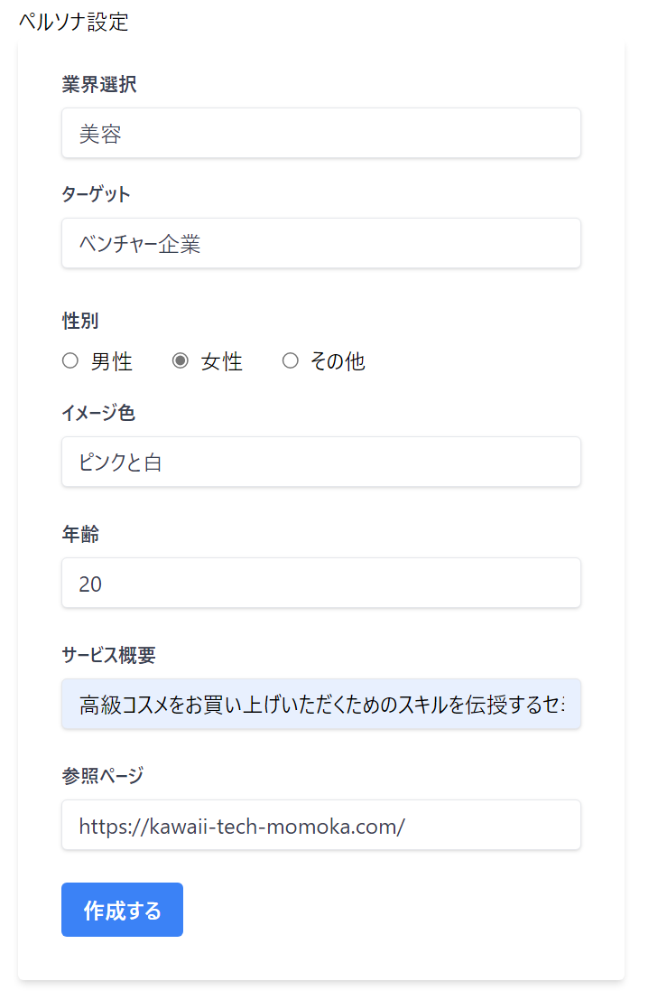
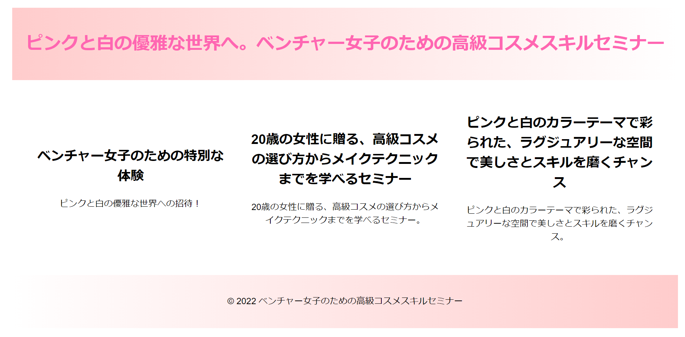

生成AI系ハッカソン参加レポート
筆者のスペック
- プログラミングはほぼ独学
- 学生時代はプログラマー
- 今はソフトフェアとして自社製品の製品開発を担当
- 使える言語はC# , Java , Python , Shell Script , React×TypeScript（勉強中）
- ハッカソンは2回目
参加したイベント
| イベント名 | シンプルな生成 AI ハッカソン #4 |
|---|---|
| URL | シンプルな生成 AI ハッカソン #4 |
| 主催 | SimpleForm |
| 参加対象者 | 「プログラマもしくはデザイナであればどなたでも参加いただけます！」 |
技術選定
我々はPython × Streamlitで作りました。ソース管理はGitHubです。
■言語
Pythonを選んだ理由は、「とりあえずPythonだよね」みたいな軽い感じで決まりました。
■フレームワーク
Streamlit（読み方：ストリームリット）というフレームワークを採用しました。 これは私がごり押ししてやらせてもらいました。 なぜStreamlitを使いたかったかというと、私が以前ハッカソンに参加した際にStreamlitを使っているチームがあり、フロントの開発がすごく楽と聞き、そのチームの成果物のUIも綺麗だったので、興味を持ったからです。
■ソース管理
ソース管理はほとんどの場合がGitHubなので、使ったことない人は練習しておきましょう。
はじめてのGitでGitの使い方を解説していますので、確認しておきましょう！
私たちのチームが作ったもの
私たちが作ったのはニュースをポジティブにするwebアプリケーションです。以下のようなフローで作成しました
- ニュースのURLを入力
- URLの記事の内容を取得
- プロンプトを作る
- API叩く
- 結果表示
動的にプロンプトを作る
私は以下のようにして動的にプロンプトを作りました。
# GPTへ渡す情報
model_name = "gpt-4o-mini"
role = "あなたはプロの心理カウンセラーです。\n"
prompt = f"""以下の手順で、記事の内容をポジティブにしてください。
【手順1】
例えば、以下の様にポジティブな表現に変えてください。この時に、引用された発言は書き換えてはいけません。。
・「積極性に欠ける」は「控えめな性格」
・「頭が悪い」は「天然」
・「貧乏」は「清貧」
・「忙しい」は「充実している」
Let's think step by step.
【手順２】
例えば、以下の様に過激な表現やグロテスクな表現は柔らかい表現に変更して下さい。
・「殺す」は「天国へ導いた」
【手順4】
見出しは作らずにポジティブ化したニュースをプレーンテキストで出力してください。
【手順4】
出力言語は{language}にしてください。
【手順5】
・出力言語が日本語の場合、語尾は「なんだよ💓♡」や「だよ」や「だって～！」とか「らしいよ✨」とか「～🍀」にしてください。
・語尾が絵文字の時は「。」を削除してください。
・出力言語が日本語以外の場合は「♡」とか「★」とか「😊」とか「💕」や「🍀」を使ってください。
【手順7】
最後に注意点です。{language}に直して表示してください。
## 記事
{article["body"]}
"""
工夫した点としては、入力値がからでもプロンプトが崩れずに正しく作れるようにしたことです。 それから、ほかのメンバーにもmakePromptForCatchcopy関数を基に関数を作ってもらうようにしたので、読みやすさには気を付けました。
makepromptForLP関数は、ハッカソン当日はかなりChatGPTの作るデザインにバラつきが出たので、後日、改修してみました。
ちなみに、関数名を誉められました✨プロンプトの綴りを間違えて指摘されたりもしました(笑) ← えいごにがて
成果物
ペルソナ入力ページ
このページでペルソナの情報を入力させます。

生成されたLP
ジャーン！！！いかがでしょうか？
もちろん、手直しは必要だと思いますが、ボタン一つでこれが生成されるのです。 とても面白いですよね！！！！ 生成AIの可能性を感じます。プロンプトを作るところもシステムで持てば、エンドユーザーはプロンプトエンジニアリングの知識すら必要ありません。

おわりに
ハッカソン、本当に楽しかったです！！
設計書作成やお偉いさんとの話し合いやテストなど、本当は好きじゃないことは抜いて、楽しいアイディア出しと開発だけをできるのです！！楽しいに決まっていますね✨
普段お仕事で使わない言語に触れるチャンスにもなりますし、自分の会社以外のエンジニアと交流するのも楽しい＆勉強になります😌 開発さえできればだれでも参加できる場合がほとんどなので、是非お勧めします。
最後まで読んでくださり、ありがとうございました。